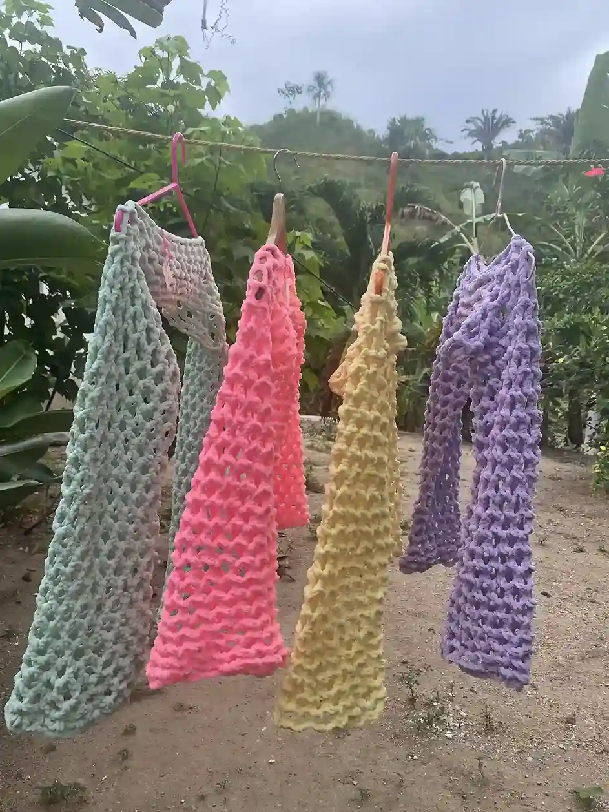
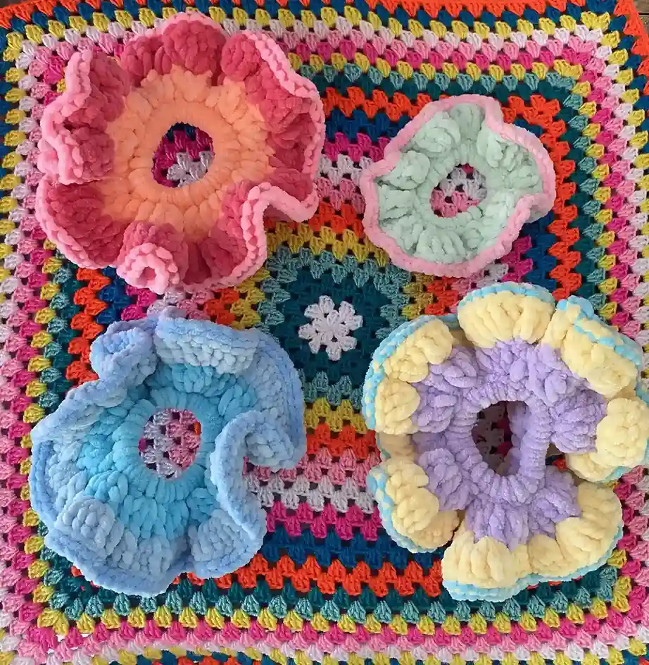
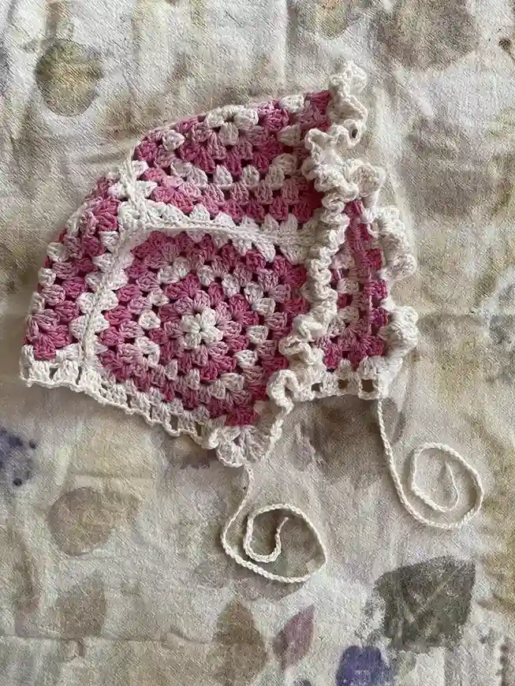
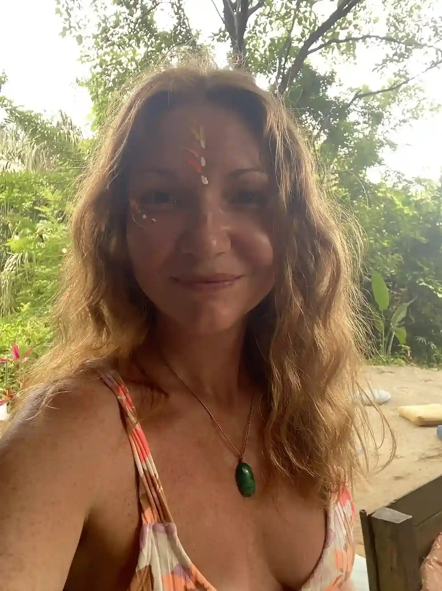

Galería de Tejidos Elaborados




Que vas hacer
● Un viaje a lo básico: Domina los puntos esenciales del crochet: cadeneta, punto bajo, punto alto... ¡los cimientos para crear piezas increíbles!
● De lo simple a lo esencial: Teje tus primeras creaciones: carteras, moños, mantas, ¡e incluso una blusa! Paso a paso, con paciencia y guía experta
● Más que un taller, una terapia: Descubre cómo el crochet se convierte en una herramienta para calmar la mente, reducir el estrés y conectar contigo mismo
● Creatividad sin límites: Despierta la artista que llevas dentro. Explora colores, texturas y diseños, y dale vida a tus propias ideas
● Naturaleza como inspiración: Rodeado de la serenidad de la Sierra Nevada, encuentra la inspiración para tejer piezas únicas que reflejen la belleza del entorno.
● Relajación profunda: El ritmo del crochet te ayudará a desconectar del estrés y encontrar la calma interior
● Concentración plena: Aprenderás a enfocar tu atención en el presente, mejorando tu capacidad de concentración
● Autoexpresión creativa: Da rienda suelta a tu imaginación y crea piezas que reflejen tu estilo personal
● Empoderamiento: Siente la satisfacción de crear algo hermoso con tus propias manos.
- Conectar con la naturaleza
- Despertar tu creatividad
- Aprender técnicas ancestrales
- Crear tu propia obra de arte textil
- Cuidar el medio ambiente.
- Materiales
- Café
- Cakes Saludables
- Hidratación.

Marion, artista y madre, irradia una energía serena y acogedora. Su pasión por el arte y su sensibilidad hacia la naturaleza la llevaron a encontrar en esta casa artística, en medio de la finca orgánica, un remanso de paz y un espacio para compartir su experiencia a través del arte terapia.



OTROS TALLERES DISPONIBLES

Audrey
AirbnbGran estancia en casa de Marion y su familia. Bien ubicado, entre las hermosas playas y el parque Tayrona. Los platos ofrecidos y preparados por Marion, servidos en casa, son deliciosos y económicos.. no se pueden perder durante una estadía. Gracias de nuevo.

Juan Camilo
AirbnbMaravillosa estancia con una hermosa familia. Me recibieron como uno de los suyos, me proporcionaron café de fruta, me llevaron a caminar y cenaron en Navidad conmigo. Una pequeña comunidad maravillosa y un placer estar cerca. Gracias por recibirme. ¡Hasta la próxima!

Matteo
AirbnbSer anfitrión de los chicos fue una experiencia más que positiva. Amigable y siempre sonriente, un lugar rodeado de naturaleza, departamento limpio y a poca distancia de fabulosas playas y del magnífico Parque Tayrona. ¡Muy recomendable, definitivamente volvería!
Síguenos en Instagram
@fincanaturalmystic
(C) copyright 2025 FINCA NATURAL MYSTIC. RNT 168119. Diseñado por ADC MAKER